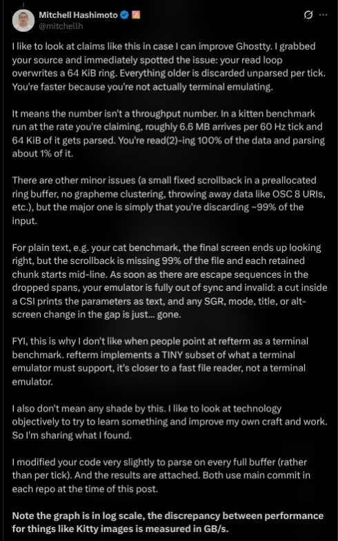
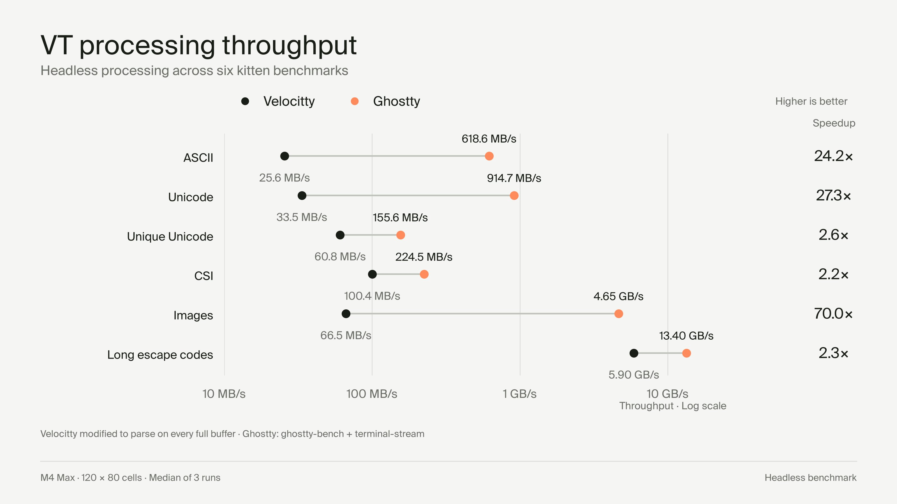
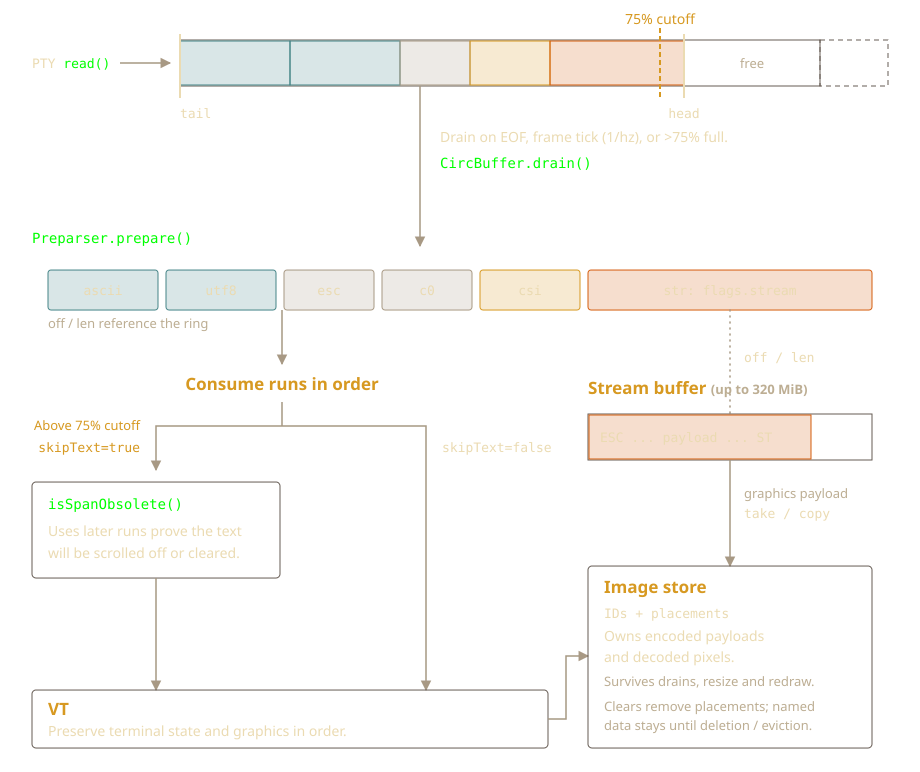
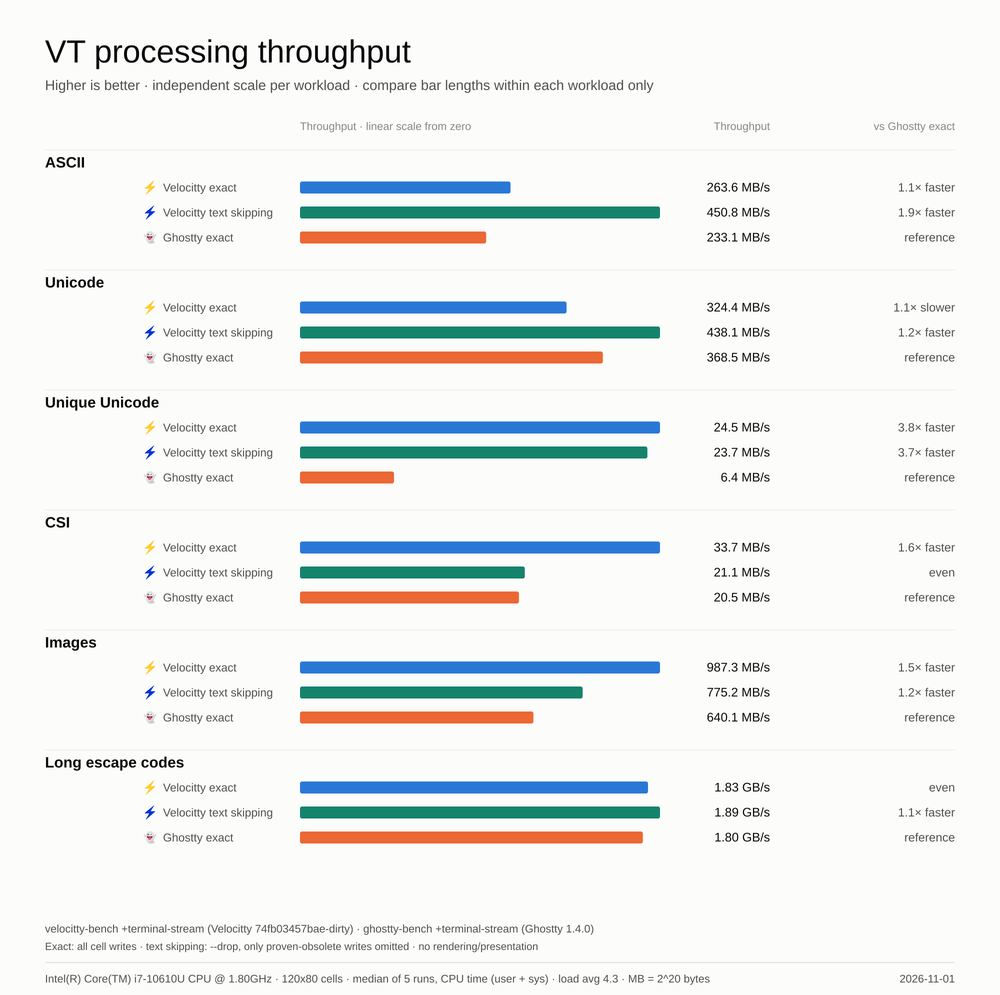
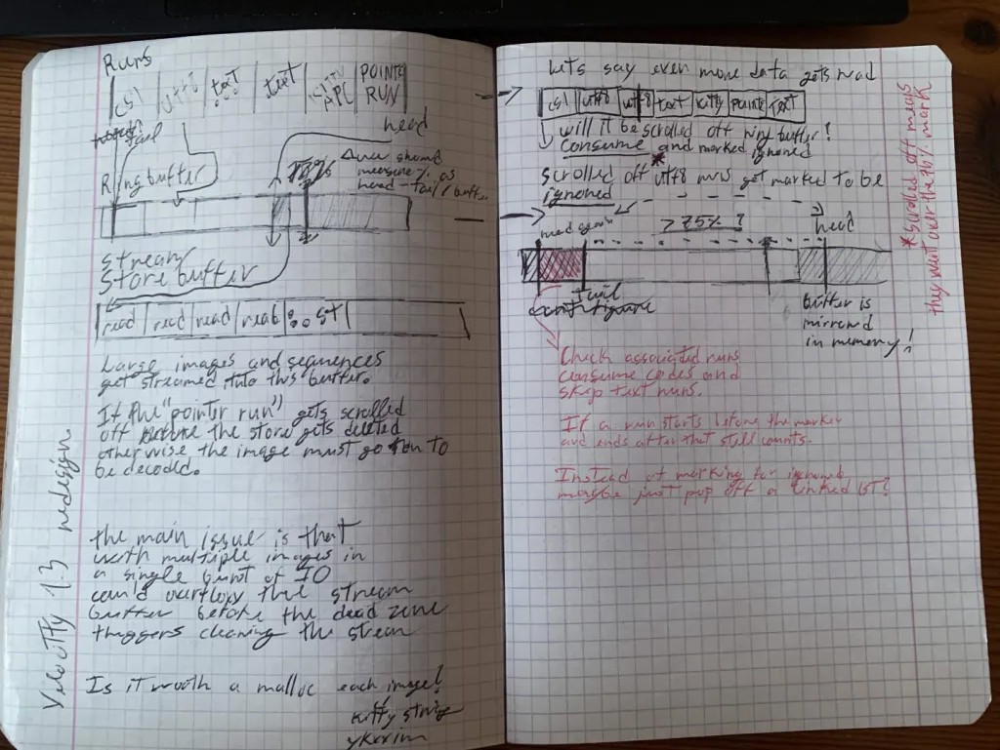
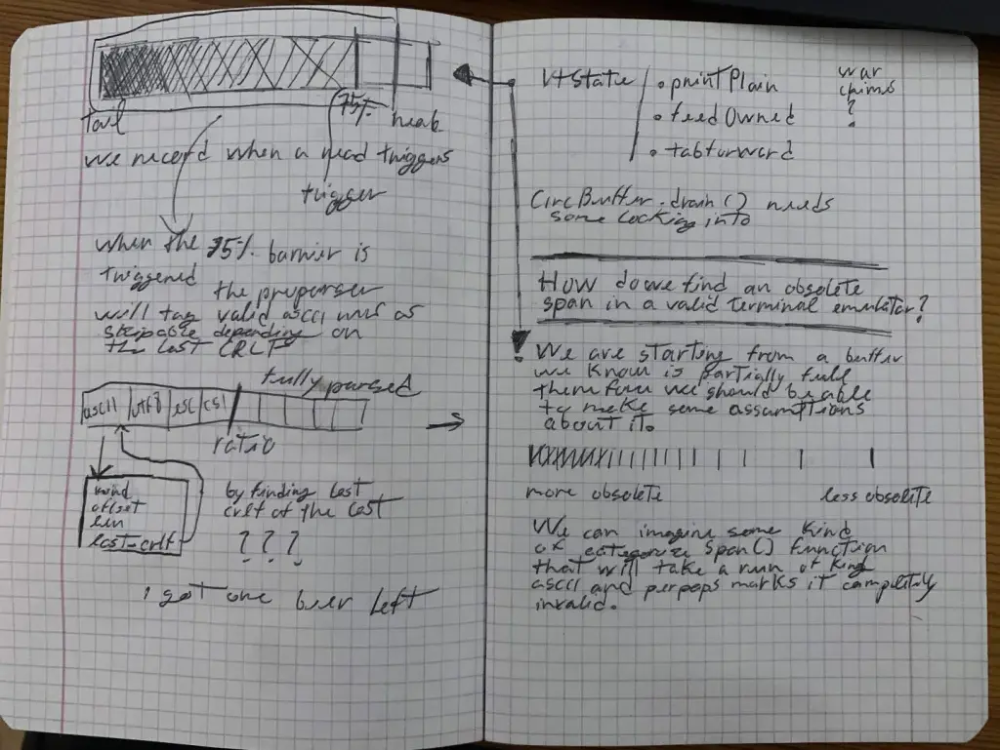

Velocitty 1.3 - Input Redesign and Paint Skipping
Problem
Terminal emulation is trickier than it seems. Even if you parse every sequence and
drop old text — which is a patch I tried before coming up with this redesign — you can
still have sync issues because of sequences like CSI ? 7 h and
CSI ? 7 l that enable and disable automatic line wrapping.
A terminal is not a bunch of HTML with bits of inline CSS.
Simply discarding old output will eventually cause long-lasting synchronization issues.
For example, if a 64 KiB image was preceded by CSI ? 1049 h (switching to the alternate screen),
discarding that screen switch would cause Velocitty 1.2 to draw the image over the main screen instead.
In high-output workloads, much of the input is plain ASCII that scrolls off-screen or gets cleared before a frame is displayed.
That's what I wanted to address in 1.3: skip painting that can be proven obsolete, without skipping the terminal state attached to it.
Technical feedback
Special thanks to Mitchell Hashimoto for the technical feedback on Velocitty 1.2. He also posted a benchmark comparing its VT processing throughput with Ghostty. I've kept the original post and chart here for reference.


Redesign
A terminal can receive a lot of output in a very short time. Sometimes that output is immediately cleared or scrolled off-screen before it can even be displayed. Painting all of it is wasted work!
Velocitty now reads into a mirrored 1 MiB ring buffer. Before the VT parser sees the input, a pre-parser splits it into runs: text, ESC, C0, CSI, OSC and other control strings. Each run stores an offset and length pointing to its backing storage. It doesn't need to copy the whole input just to describe it.
Normally, the runs are consumed at the next frame boundary, or when input closes.
This gives reads time to accumulate. Once the ring passes 75% occupancy,
pressure consumption kicks in with skipText=true. That's when the
isSpanObsolete lookahead is used. On smaller workloads it's off, so I'm not
paying for the visibility proof when there isn't much to gain.
In both cases, the runs reach the VT parser in order and without unconsumed ring bytes being overwritten.

Large payloads
The ring buffer is now 1 MiB. A control string can be much larger than that, or arrive across many reads. For unfinished OSC, DCS, APC, PM and SOS strings, the pre-parser moves the bytes it already has into a separate, growable stream buffer. Subsequent reads can append straight to that buffer even if the ring is empty.
When the terminator sequence arrives, the pre-parser emits a run with
flags.stream. This signals that the offset and length point to the
stream storage instead of the ring buffer. Anything after the terminator
goes back into the ring. The VT parser still receives everything in order,
even though the bytes come from two different places.

This handles framing for things like Kitty APC graphics, sixel DCS bodies and OSC 52 clipboard data.
There are still limits here. Complete control strings initially take space in the ring, and a large string can cross the 75% threshold before streaming starts. So bulk payload traffic isn't fully separate from pressure accounting yet. CSI/SGR don't use this stream path, and incomplete CSI/ESC input has its own 4 KiB hold limit. None of that, by itself, proves that payload pressure explains a benchmark difference.
Image ownership
Note that the temporary buffer is not the image store. The image store owns its encoded payloads or decoded RGBA pixels, along with image IDs and placements. A sufficiently large completed Kitty APC upload can hand its allocation directly to the image store, avoiding another payload copy. Other paths copy or transfer their own storage.
The image cache is limited to 64 images and a separate 320 MiB logical quota, with unplaced entries evicted first. Each image reserves whichever is larger: its encoded payload size or decoded RGBA size. That way, lazy decoding doesn't suddenly change its quota cost. Decode scratch space and allocator overhead are extra. This quota is separate from the stream-buffer cap, and neither is a limit on the process's total RSS.
Skipping obsolete painting
This is an important distinction: I'm skipping painting, not terminal
state. isSpanObsolete looks at later runs to prove that earlier ASCII/UTF-8
cell painting won't affect the final visible result. That text still advances the cursor,
wraps lines and updates grapheme state. SGR, mode changes, queries, replies and graphics
are still processed in order!
The proof uses qualifying screen clears, or enough line feeds scrolling the full region, to show that earlier painted cells are gone. It stops conservatively at things it can't reason about safely (for now) like cursor movement, rectangle copies that read existing cells, screen switches and restores. If this function can't prove a span is obsolete, the painting is not skipped.
The lookahead is lazy. Instead of scanning the runs every time, the pre-parser only does it when the VT first needs to know whether some text is obsolete. It scans backwards once, remembers the cutoff, and reuses that result for the rest of the batch.


CSI 2 J) example.There's a lot of room for clever heuristics and optimizations here, but I kept things simple because it's more of a proof-of-concept.
Benchmarks
I also wanted a comparison that measures VT processing directly, without mixing in
rendering and window presentation. This is a headless comparison with Ghostty 1.4.0,
using the same generated terminal stream and grid dimensions. Velocitty's exact mode
and its --drop text-skipping mode are shown separately, so the cost of the
optimization isn't hidden inside the baseline.

--drop text-skipping modes versus ghostty-bench 1.4.0 exact, on an Intel i7-10610U.
Median of five CPU-time runs on 2026-11-01, generated via scripts/bench_vs_ghostty.py. No rendering or window presentation.The compatible +terminal-stream mode in velocitty-bench
uses identical generated input, identical grid dimensions and CPU time (user + system).
It doesn't require the two programs to take exactly the same wall-clock time. Using
the same stream also avoids differences caused by applications choosing different
output for TERM=xterm-256color and xterm-ghostty.
Later progress-redraw improvements and their separate before/after measurements are recorded in Velocitty 1.3.1. The chart above preserves the original 1.3 comparison.
Early designs
I tried a few simpler ideas first. One was a "dead zone" where I ignored ASCII/UTF-8 before a certain point. It didn't help much in practice, but it led me toward this design: instead of using a cutoff, I need to prove the painting won't matter.
These are my original notebook sketches.


Changelog
Besides the ring and pre-parser redesign, there were a lot of smaller fixes and improvements. Here's the full list.
Performance and output handling
- Bounded, reusable parser metadata and shared CSI parsing.
- Direct stream-buffer reads and image-buffer handoff to reduce copying for large transfers.
- SIMD UTF-8 decoding and bulk text-printing paths.
- Reduced terminal cells to 8 bytes using shared, interned styles.
- Style-table compaction and renderer invalidation when style IDs change.
I got the style table idea from Ghostty.
Unicode and text
- Unicode 18 grapheme-break tables.
- Extended grapheme-cluster handling with mode 2027 support.
- Improved combining marks, variation selectors, emoji sequences, and cluster-width changes at line boundaries.
- Added combining-mark rendering and Hangul-jamo composition.
- Updated selection and copying to preserve complete grapheme clusters.
- Preserved clusters through insertion, deletion, erasure, and reflow.
- Preserved styled trailing spaces and active/saved cursor positions through wide-glyph reflow.
Graphics
- Anchored kitty and sixel images to scrollback lines.
- Updated image placement handling for scrolling regions and history expiration.
- Deferred eligible image decoding until a placement becomes visible.
- Improved image-transfer ownership, cleanup, and retransmission handling.
- Added support for image strings larger than the input ring.
- Preserved anchors, blank-cell placements and the scrolled viewport through resize/reflow.
- Corrected natural/scaled cursor advancement, pending wrap and sixel double-scrolling.
- Retained named image data for re-placement after clears and lowercase deletion.
- Added bounded, decode-independent cache accounting and unplaced-first eviction.
- Refined visible/point/placement-ID deletion and cancellation of unfinished uploads.
- Kept anonymous/sixel image IDs distinct from existing named Kitty images, including ID wraparound.
- Bounded sixel RGB scaling and header counters, and corrected allocation-failure cleanup.
Font loading
- Resolve the configured primary or system monospace font without hardcoded preferred paths.
- Load styled and fallback faces on demand, preserve fallback order, deduplicate data and cache failed lookups.
- Keep valid blank glyphs from triggering unnecessary fallback loads during ASCII warmup.
- Make rendering benchmarks follow application font selection and parser-only benchmarks font-free.
- Preserve selected font-collection members in primary loading, lazy fallback identity and rasterization.
Correctness and input
- Hardened paste handling against escape/control injection; allocation failures no longer fall back to raw input.
- Fixed composed Unicode input under Kitty's all-keys reporting mode.
- Fixed no-button mouse-motion reporting and urxvt mouse-button encoding.
- Propagated resize allocation errors instead of silently publishing inconsistent dimensions.
- Reaped Linux notification child processes and protected notification arguments with
--. - Corrected raw C1-byte handling, reset behavior, and soft-wrap clearing during erasure.
- Preserved existing cells during tabulation and the live cursor content during height-only window shrinking.
- Retained rectangle-copy source cells during pressure parsing and honored updated extended palette entries.
- Corrected reverse-video repainting and selection highlights after framebuffer scroll reuse.
Benchmarks and tests
- Added Ghostty-compatible headless
+terminal-streambenchmarking. - Added automated Ghostty throughput comparisons with raw samples and generated charts.
- Changed the chart to grouped horizontal bars with independent, zero-based linear scales.
- Added startup comparisons for Velocitty, foot, and Monstar.
- Expanded parsing, graphics, drain, firehose, and rendering benchmark workloads.
- Added configurable benchmark optimization and a
bench-installtarget. - Added differential firehose tests, split-input sweeps, seeded fuzzing, and Unicode/rendering regressions.
- Removed the obsolete standalone rendering/golden-test harness and older benchmark implementations.
Packaging and documentation
- Consolidated icons, desktop metadata, and Windows resources under
assets/. - Updated icon generation to use the canonical SVG.
- Updated build, packaging, and installer asset paths.
- Added Linux package Makefile installation/uninstallation with PREFIX and DESTDIR support.
- Added design pages, benchmark imagery, storage diagrams and subsystem references.
- Updated README branding, feature descriptions, Linux installation instructions, and the man page.